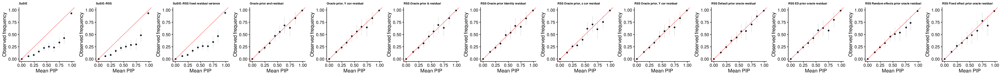
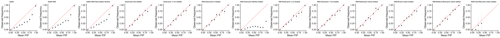
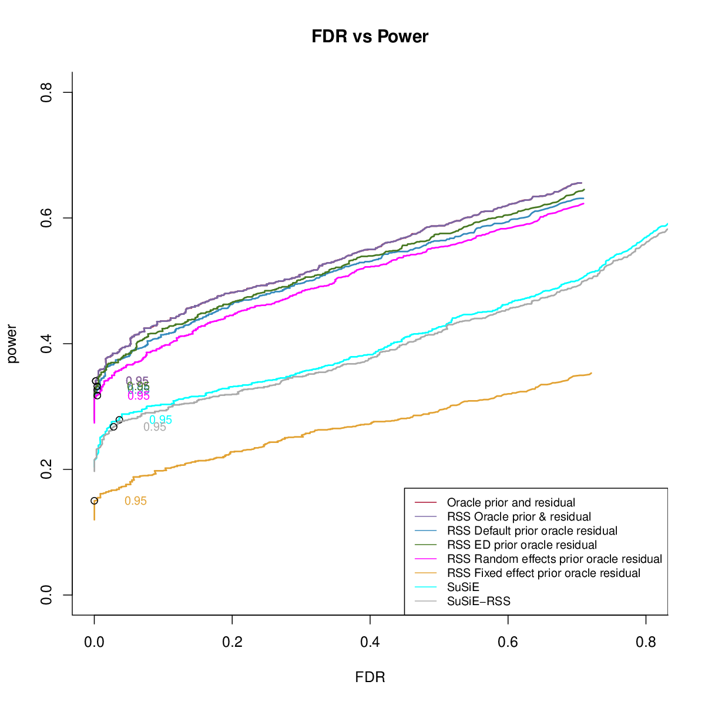
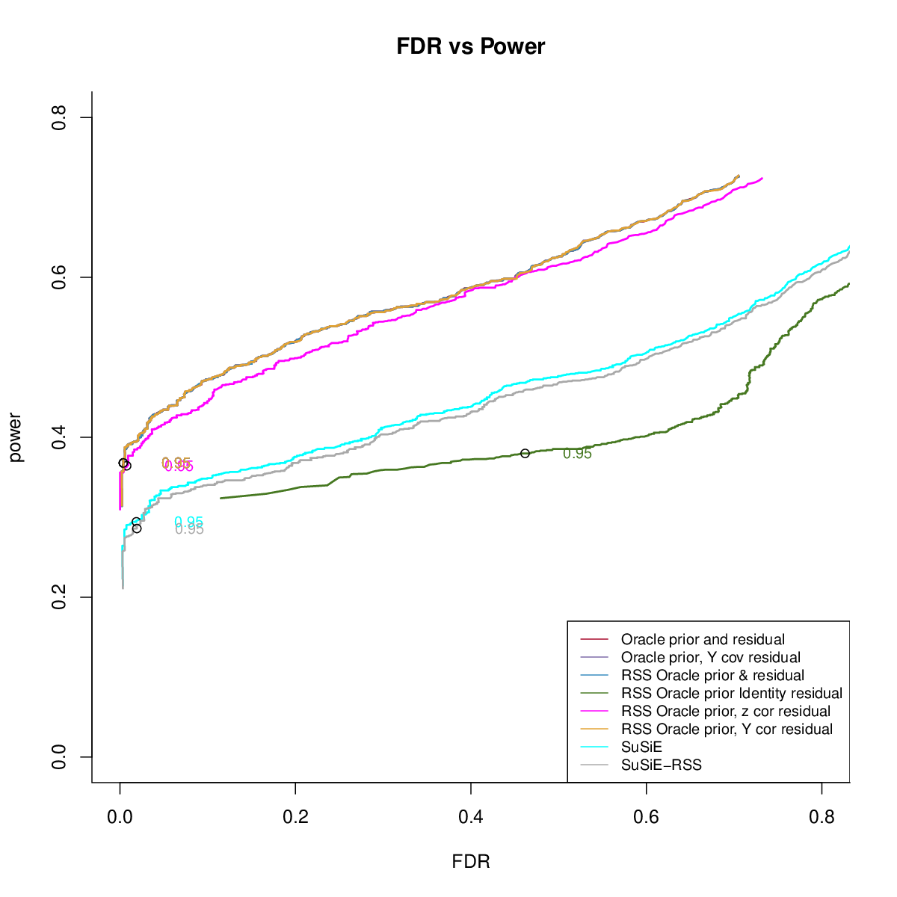
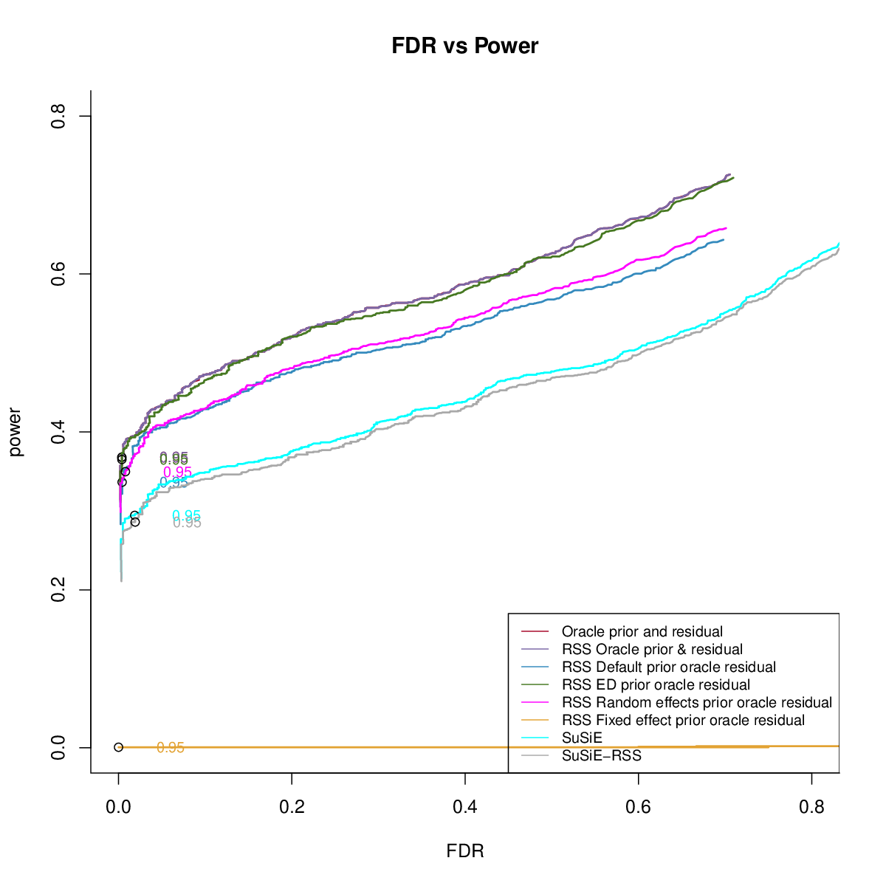
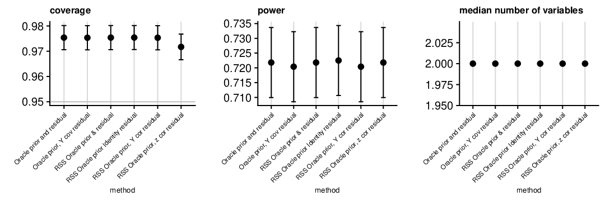
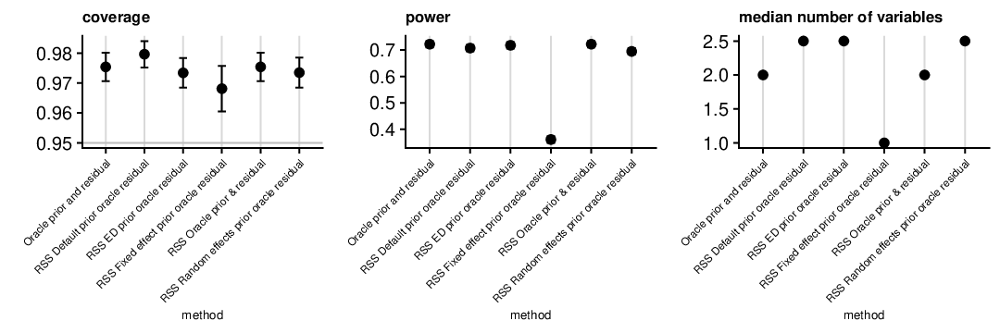
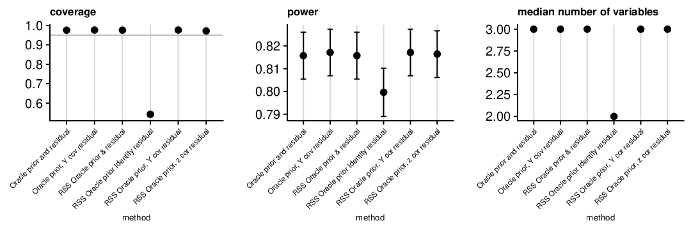
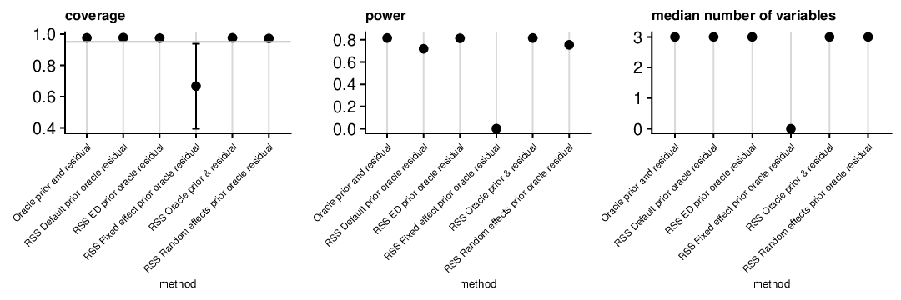

mvSuSiE RSS ukb
Yuxin Zou
01/06/2021
Last updated: 2021-01-12
Checks: 2 0
Knit directory: mmbr-rss-dsc/
This reproducible R Markdown analysis was created with workflowr (version 1.6.2). The Checks tab describes the reproducibility checks that were applied when the results were created. The Past versions tab lists the development history.
Great! Since the R Markdown file has been committed to the Git repository, you know the exact version of the code that produced these results.
Great! You are using Git for version control. Tracking code development and connecting the code version to the results is critical for reproducibility.
The results in this page were generated with repository version 1749f85. See the Past versions tab to see a history of the changes made to the R Markdown and HTML files.
Note that you need to be careful to ensure that all relevant files for the analysis have been committed to Git prior to generating the results (you can use wflow_publish or wflow_git_commit). workflowr only checks the R Markdown file, but you know if there are other scripts or data files that it depends on. Below is the status of the Git repository when the results were generated:
Ignored files:
Ignored: .DS_Store
Ignored: .Rhistory
Ignored: .Rproj.user/
Ignored: data/.DS_Store
Ignored: output/.DS_Store
Untracked files:
Untracked: data/ENSG00000140265.12.Multi_Tissues.rds
Untracked: data/FastQTLSumStats.mash.FL_PC3.rds
Untracked: data/mmbr_ukb_simulation/
Untracked: data/mmbr_ukb_simulation_problem/
Untracked: output/GTExprofile_res.rds
Untracked: output/GTExprofile_resL1.rds
Untracked: output/GTExprofile_resL1_elbo.rds
Untracked: output/GTExprofile_resL3.rds
Untracked: output/GTExprofile_resL3_elbo.rds
Untracked: output/GTExprofile_res_elbo.rds
Untracked: output/GTExprofile_resapprox.rds
Untracked: output/GTExprofile_resapproxL1.rds
Untracked: output/GTExprofile_resapproxL1_elbo.rds
Untracked: output/GTExprofile_resapproxL3.rds
Untracked: output/GTExprofile_resapproxL3_elbo.rds
Untracked: output/GTExprofile_resapprox_elbo.rds
Untracked: output/GTExprofile_resapproxdiag.rds
Untracked: output/GTExprofile_resapproxdiagL1.rds
Untracked: output/GTExprofile_resapproxdiagL1_elbo.rds
Untracked: output/GTExprofile_resapproxdiagL3.rds
Untracked: output/GTExprofile_resapproxdiagL3_elbo.rds
Untracked: output/GTExprofile_resapproxdiag_elbo.rds
Untracked: output/GTExprofile_resdiag.rds
Untracked: output/mmbr_gtex_res.Rprof
Untracked: output/mmbr_gtex_res_approx.Rprof
Untracked: output/mmbr_gtex_res_approx_diag.Rprof
Untracked: output/mmbr_gtex_res_diag.Rprof
Untracked: output/mnm_missing_output.20200527.rds
Untracked: output/test
Untracked: output/tiny_data_211_cond2L2.gif
Untracked: output/tiny_data_211_cond2L2.pdf
Untracked: output/tiny_data_211_cond2L3.gif
Untracked: output/tiny_data_211_cond2L3.pdf
Untracked: output/tiny_data_211_cond2initL3.gif
Untracked: output/tiny_data_211_cond2initL3.pdf
Unstaged changes:
Modified: analysis/mmbr_missing_rss_problem1.Rmd
Note that any generated files, e.g. HTML, png, CSS, etc., are not included in this status report because it is ok for generated content to have uncommitted changes.
These are the previous versions of the repository in which changes were made to the R Markdown (analysis/mmbr_rss_ukb_simulation_20210107.Rmd) and HTML (docs/mmbr_rss_ukb_simulation_20210107.html) files. If you’ve configured a remote Git repository (see ?wflow_git_remote), click on the hyperlinks in the table below to view the files as they were in that past version.
| File | Version | Author | Date | Message |
|---|---|---|---|---|
| Rmd | 1749f85 | zouyuxin | 2021-01-12 | wflow_publish(“analysis/mmbr_rss_ukb_simulation_20210107.Rmd”) |
| html | 43029d1 | zouyuxin | 2021-01-11 | Build site. |
| html | 55450a1 | zouyuxin | 2021-01-10 | merge |
| html | 9dfc1f4 | zouyuxin | 2021-01-10 | update file |
| html | 77428cc | zouyuxin | 2021-01-08 | Build site. |
| Rmd | e1aed76 | zouyuxin | 2021-01-08 | wflow_publish(“analysis/mmbr_rss_ukb_simulation_20210107.Rmd”) |
| Rmd | c0cfcbe | zouyuxin | 2021-01-08 | add new simulation result |
This is result from our mvSuSiE RSS simulation using UKB data. There are 600 datasets. The max PVE across traits is 0.0005.
For each dataset, we simulate signals using 2 type of priors, the details are here
Artificial mixture: 20 conditions. The oracle residual variance is a diagonal matrix.
UKB Bloodcells mixture: 16 conditions. The oracle residual variance is a dense matrix.
We estimate prior weights using ‘EM’ method.
Overall: Ignoring correlation between conditions in residual matrix results in poor fit.
PIP calibration
Artificial Mixture

UKB Bloodcells Mixture

Power
Artificial Mixture
- Comparing different residuals

- Comparing different priors

UKB Bloodcells Mixture
- Comparing different residuals

- Comparing different priors

CS
Artificial Mixture
- Comparing different residuals

- Comparing different priors

UKB Bloodcells Mixture
- Comparing different residuals

- Comparing different priors
